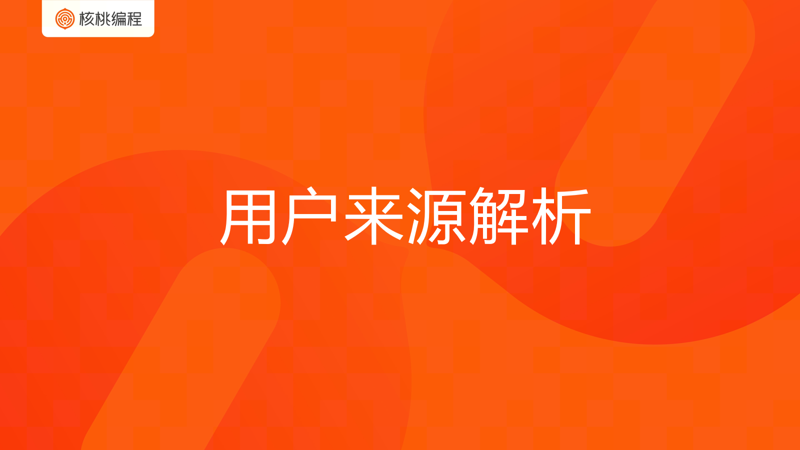
各位小伙伴，大家好，今天这节课的主题是《用户来源解析》。先问大家一个问题：咱们手上的这些孩子，到底是怎么来到核桃编程的？其实每一个学员都不是凭空出现的。从投放团队花钱获客，到前端班主任做体验课服务，再到首单阶段课导老师的带班和续报，中间经过了好几个环节、好几拨人的付出。这节课我们就把三件事讲清楚：你的用户从哪来；每个环节由谁负责，前面的人已经做了什么；到你这一棒，交接时要注意什么，怎么接好，怎么做得更好。
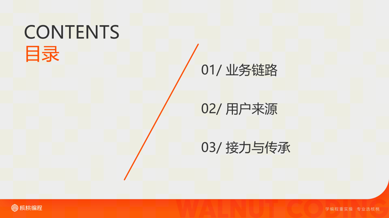
大家看目录，今天的内容分三个部分。第一部分是业务链路，看一个用户从接触核桃到成为你的学员，中间经过了哪些团队，每一段由谁负责。第二部分是用户来源，具体看用户从哪些渠道来、来核桃想要什么，以及接手前你要掌握哪些信息。第三部分是接力与传承，看前面的老师已经为你打下了哪些服务基础，你要怎么在这个基础上做得更好，不辜负每一个来之不易的用户。来看一道题，今天这节课分为哪三个部分？
互动题
今天这节课分为哪三个部分？【多选】
- A. 业务链路
- B. 用户来源
- C. 接力与传承
- D. 赛考体系
选错后：仅弹正确提示继续
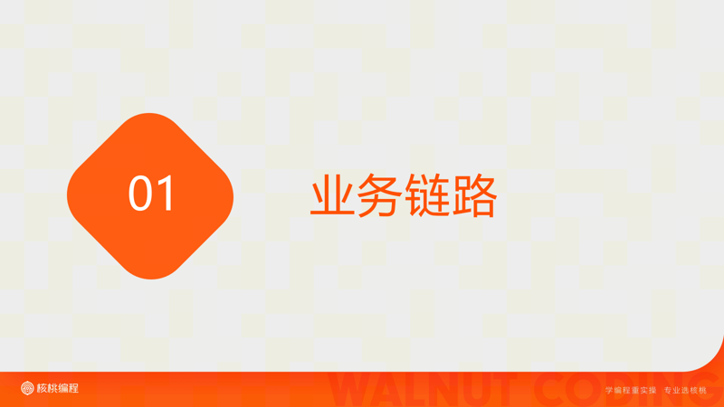
我们先看第一部分，业务链路。
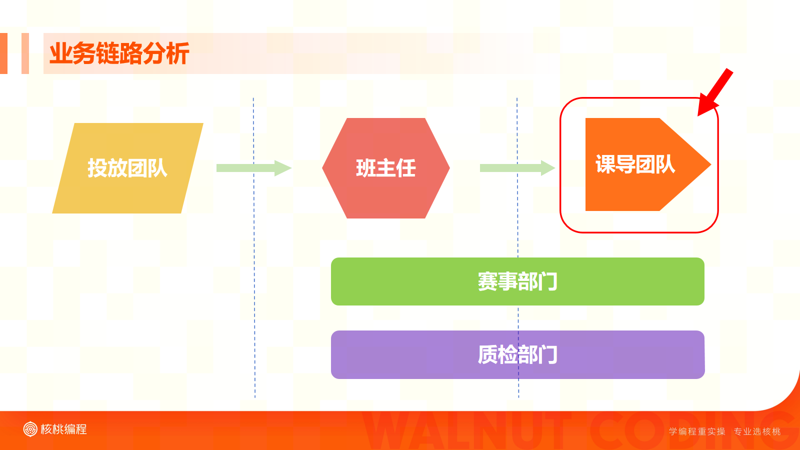
大家来看这张业务链路图。主线从左到右分为三段：投放团队负责获客，把流量给到班主任；班主任承接体验课的服务与转化；学员转正课之后，就移交到课导团队带班，也就是红框标注的我们这一环。除此之外，还有两条贯穿全链路的支撑线：赛事部门和质检部门，它们不局限于单一环节，全程协同整条业务线。所以一个用户从初次接触核桃编程，到成为正式学员，是投放、班主任、课导、赛事、质检多方配合、环环相扣的结果，并不是课导单打独斗。前面每一环的交付质量，都会直接影响我们后续和家长、孩子的沟通。这里重点强调：课导不需要自主拓客。投放团队持续投入成本获客，线上抖音、视频号投流，线下校园合作、地推，每一个体验课用户都有获客成本。分到我们手上的每一位学员，都是公司投入资源、前面伙伴付出精力换来的，来之不易。来看一道题，业务链路分析中，用户流转的顺序是？
互动题
业务链路分析中，用户流转的顺序是？
- A. 投放团队→班主任→课导团队
- B. 班主任→投放团队→课导团队
- C. 课导团队→班主任→投放团队
- D. 投放团队→课导团队→班主任
选错后：重讲本页重触发
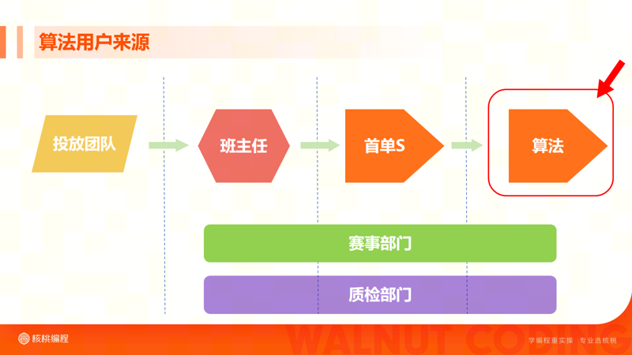
大家来看这张业务链路图，顺着从左到右看，先把每一段的责任分工记清楚。最前端是投放团队，负责获取流量，把线索交付给班主任。班主任承接体验课阶段的服务和转化，转化成功后，学员进入图形化一阶段。由一阶段的课导老师带班，完成日常教学、学情跟进和阶段续报。等学员完成这一阶段续报，才会流转到算法板块，也就是图中红框标注的、由我们算法课导接手的环节。赛事部门和质检部门不归属某一段，而是贯穿整条链路，全程协同支撑。这里需要大家明确一个前提：学员交到我们手上之前，已经经过班主任、前课导两轮服务。每一次交接，家长都要重新认识一位老师。我们作为承接方，核心职责就是把前面团队积累下来的信任稳稳接住，在交接环节不出现断层。分到我们手上的每一位学员，都是公司投入资源、前面伙伴付出精力换来的，来之不易。
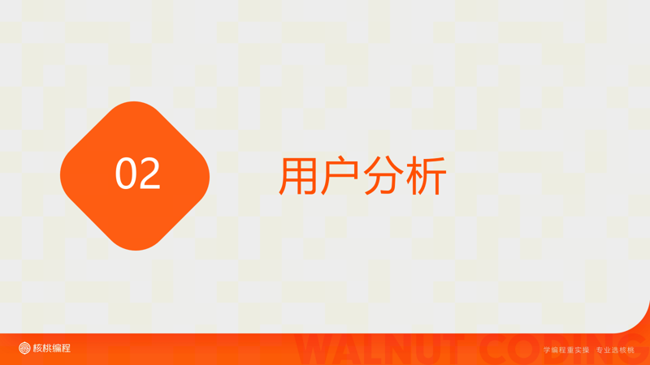
接下来进入第二部分，用户来源。上一部分我们梳理了整条业务链路，明确了各个环节的分工。这一部分，我们把视角落到用户本身：我们的用户是谁，他们选择报名二阶段的核心原因是什么。只有做到知己知彼，我们的服务才能精准落地。同时我们也要清楚，通过哪些沟通路径，去挖掘、获取这些关键信息。
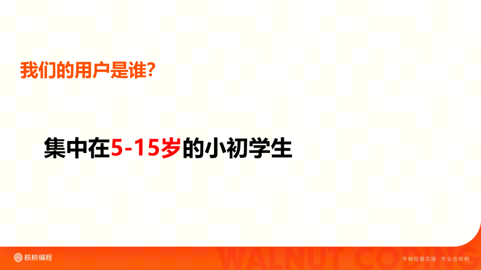
我们先明确服务对象。核桃编程的学员主要集中在 5 到 15 岁，以小学、初中阶段的孩子为主。这里有一个关键点需要大家牢记：我们的用户不只有孩子，还包括家长。孩子是教学服务的主体，而家长是付费决策者，也是孩子学习过程中的主要负责人。作为课导，我们既要面向孩子做好教学，也要维护好与家长的沟通关系 —— 后续的续报、转介绍，最终的决策都来自家长。同时大家要清楚，流转到我们算法板块的学员，在交接过来之前，已经经历了前端班主任的体验课服务，也经过了首单阶段课导老师多轮的沟通与跟进，家长对品牌并不陌生。来看一道题，我们的用户集中在哪个年龄段？
互动题
我们的用户集中在哪个年龄段？
- A. 3-6岁的幼儿
- B. 7-12岁的小学生
- C. 5-15岁的小初学生
- D. 15-18岁的高中生
选错后：重讲本页重触发
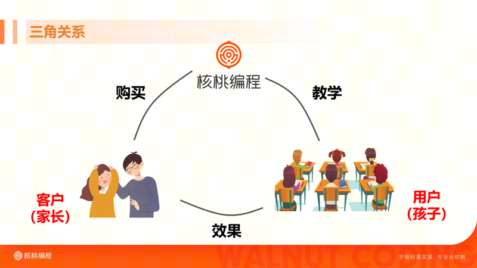
大家来看这张三角关系图，我们先来思考一个问题：平时沟通，你更多是和孩子聊，还是和家长聊？图里清晰标注了：家长是客户，负责付费购买课程；孩子是实际用户，接收核桃编程的教学。孩子学完之后产出的学习效果，再反馈给家长，形成完整闭环。孩子和家长在意的点完全不一样：孩子在意课堂好不好玩、有没有兴趣；家长更看重学习效果、思维提升，能不能帮到校内学习。而我们课导，就是连接这两端的关键纽带。从前端班主任，到首单课导，再到我们，每一棒都要接稳。我们既要照顾孩子的上课体验，留住孩子的兴趣；也要持续给家长反馈效果，打消家长顾虑。前面老师已经铺垫好了信任，我们接手之后，要把这份信任稳住、继续加深。这个三角逻辑，大家一定要吃透。来看一道题，三角关系都包含那三个？
互动题
三角关系都包含那三个？
- A. 核桃
- B. 家长
- C. 孩子
- D. 体验课
选错后：重讲本页重触发
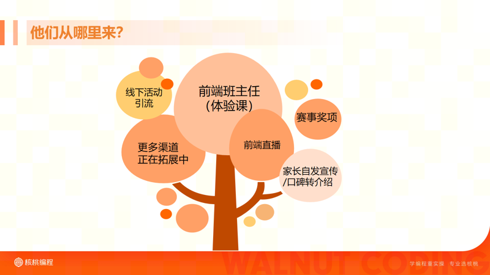
知道了用户是谁，再来看他们从哪里来。大家看这棵渠道树，主要有五大渠道：家长自发宣传的口碑转介绍、前端直播、赛事奖项吸引、线下活动引流，以及前端班主任的体验课转化，另外还有更多正在拓展中的渠道。后面我们一个一个看。先请大家记住一句话：不管哪个渠道，每一个用户背后都有成本和付出。直播要投流；线下活动要花场地、物料、师资和人力；口碑转介绍看起来不花钱，其实是老学员用真功夫换来的，是家长认可了前面老师的服务才愿意推荐。所以，珍惜你手上的每一个用户。来看一道题，“他们从哪里来”中，标注了“（体验课）”的是哪个渠道？
互动题
“他们从哪里来”中，标注了“（体验课）”的是哪个渠道？
- A. 前端直播
- B. 赛事奖项
- C. 线下活动引流
- D. 前端班主任
选错后：仅弹正确提示继续
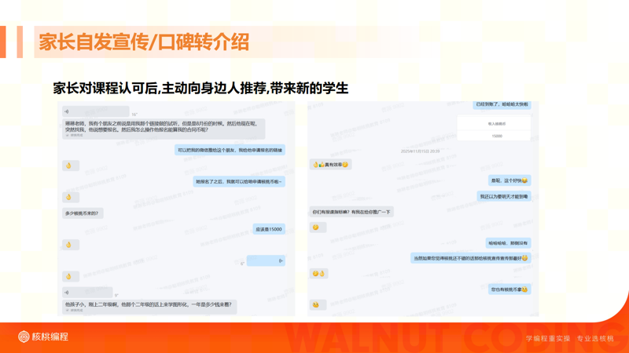
第一个渠道，家长自发宣传，也就是口碑转介绍。大家看截图里的聊天，家长对课程认可之后，主动向身边的朋友推荐，带来了新的学生。口碑转介绍是质量最高的渠道之一。老家长为什么愿意主动推荐？根本原因是孩子在核桃真的学到了东西，家长看到了效果。这也说明，前面的老师把服务做到位了，家长才愿意替我们说话。现在这些通过口碑来的学员，经过前一位老师的服务铺垫，续报之后流转到了你手上。接手这类学员要心里有数：家长本来就认可核桃，你要接住的正是这份认可。接下来的问题是，你能不能也做到，让家长愿意主动帮你转介绍？这是接力，也是挑战。来看一道题，家长自发宣传/口碑转介绍是怎样带来新学生的？
互动题
家长自发宣传/口碑转介绍是怎样带来新学生的？
- A. 家长通过抖音、小红书、快手等平台直播购买课程
- B. 家长对课程认可后，主动向身边人推荐
- C. 学生通过赛事奖项了解课程
- D. 通过线下活动吸引学生了解课程
选错后：仅弹正确提示继续
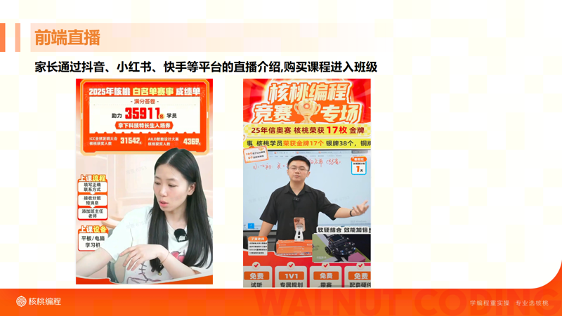
第二个渠道，前端直播，这是我们主要的获客渠道之一。家长通过抖音、小红书、快手等平台的直播了解核桃，购买课程进入班级。大家可能不知道，一场直播的投流成本很高，从家长刷到直播间、听主播介绍，到下单报名体验课，转化率其实并不高。也就是说，每一个最终报名的用户，背后可能是几十个甚至上百个浏览量堆出来的。这些用户报名体验课之后，先由前端班主任服务和转化，转成正式课再交给课导带班，一路走到你手上，我们更要用心服务。
第三个渠道，赛事奖项吸引。大家看这几张海报，核桃学员在各类赛事里拿奖，还有很多学员拿到了科技特长生认证资格，这些成绩会吸引一部分家长慕名而来。这类学生通常是通过赛事奖项了解到核桃，先上体验课，再续报正式课。他们本身就对编程学习有较高的期待和明确的目标，所以期望更高，对教学质量的要求也更高。接手这类学员要心里有数：家长看重的是孩子能不能真正学出成果，我们要用真正的教学效果接住这份期待。来看一道题，赛事奖项吸引来的用户有什么特点？
互动题
赛事奖项吸引来的用户有什么特点？
- A. 期望更高，对教学质量要求也更高
- B. 基础普遍更薄弱
- C. 付费意愿更低
- D. 只想短期体验一下
选错后：仅弹正确提示继续
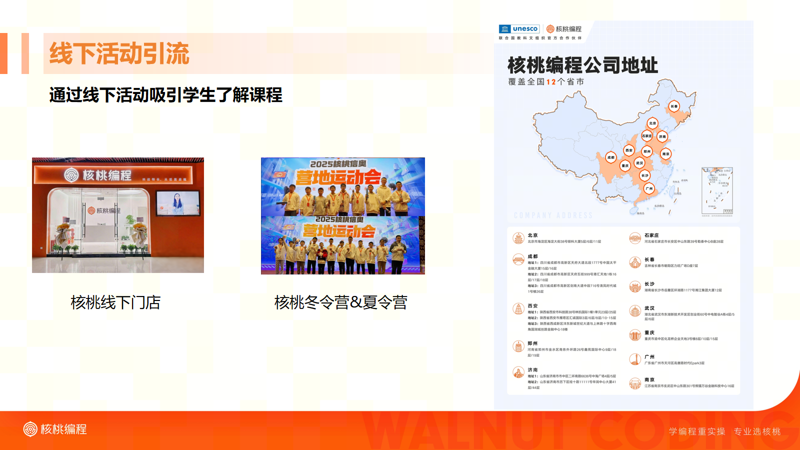
第四个渠道，线下活动引流，包括线下门店体验，还有冬令营、夏令营。大家看右边这张公司地址图，核桃编程的公司地址覆盖全国十二个省市。办一场线下活动的成本很高，场地、物料、师资、人力，每一项都要花钱。反过来看，家长愿意花时间带孩子来参加线下活动，说明他们对编程学习是有真实需求的。
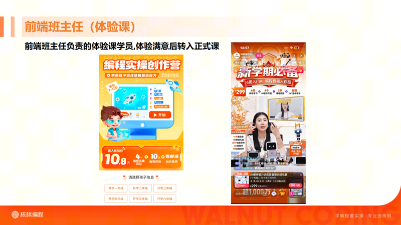
第五个渠道，也是最关键的一环：前端班主任的体验课转化。前面几个渠道来的用户，很多都要先进入体验课，再由前端班主任负责服务和转化。用户通常先花10.9，也有299元的。班主任完成体验课转化后，体验满意的学员转入正式课，由课导老师负责带班，完成日常教学、学情跟进，再到阶段续报。大家要记住：交到我们手里的学员，已经经过一轮完整服务，本身带着明确的学习期待，目标感会更强。
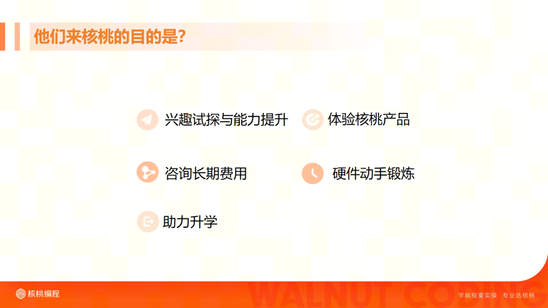
五个渠道我们梳理完了。这里大家要区分清楚，我们现在面对的算法板块家长，和前端体验课的家长不一样。这些家长不是第一次接触核桃，孩子已经在咱们这边学习了一段时间，是选择再次续报复购的用户。我问大家：已经学了半年、还愿意继续投入时间和费用往下学的家长，他们想要什么？读懂他们的诉求，我们的服务才能踩准方向。同样对应这五点： 第一，兴趣试探与能力提升。对他们来说不再是试探，而是已经看到孩子有兴趣，希望持续巩固、拔高逻辑思维能力。第二，咨询长期费用。他们已经认可课程，现在关心的是完整长期学习路线，以及后续阶段的投入规划。第三，体验核桃产品。不再是初次试课，而是认可咱们的课程体系，希望跟着体系持续往下深耕。第四，硬件动手锻炼。希望继续借助实操内容，持续锻炼孩子动手、解决问题的能力。第五，助力升学。这部分家长的目标会更清晰，愿意长期跟着规划，朝着科技特长生、赛事升学的方向稳步推进。简单总结：前端家长是 “试一试”，我们算法板块的家长，是已经验证价值，选择长期学习。我们沟通的时候，要站在长期规划的角度，而不是还当成第一次体验的客户。
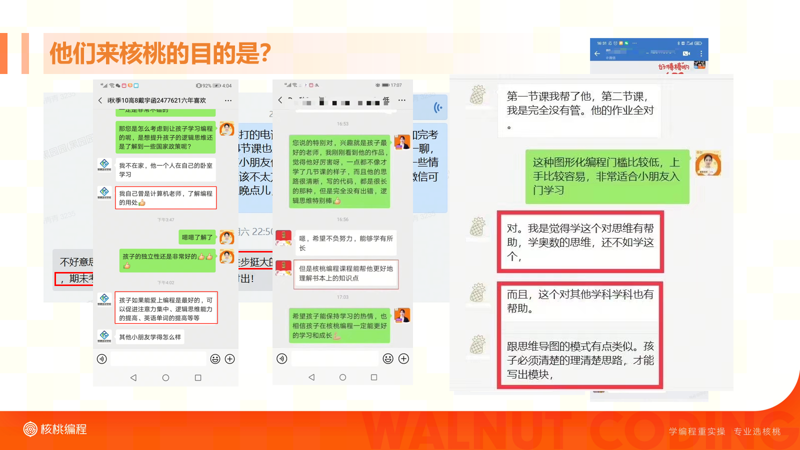
大家来看这几张家长聊天截图，都是咱们续报家长真实的想法。有的家长本身清楚编程的价值，希望帮孩子提升专注力、锻炼逻辑；有的家长认可编程对思维的锻炼；还有家长很关注，能不能带动校内其他学科的学习。这些想法，本质上都是家长对孩子成长的期待，也是他们选择持续付费、继续往下学的底层原因。这里重点提醒：这些诉求，前面的老师大概率已经做过记录。我们接手之后，不要全部重新提问、反复盘问。要基于已有学情记录，顺着线索继续深挖，匹配对应的服务。我们只有精准接住、持续满足家长的核心诉求，学员才会稳定留存，愿意继续续报，也会主动给我们做转介绍。
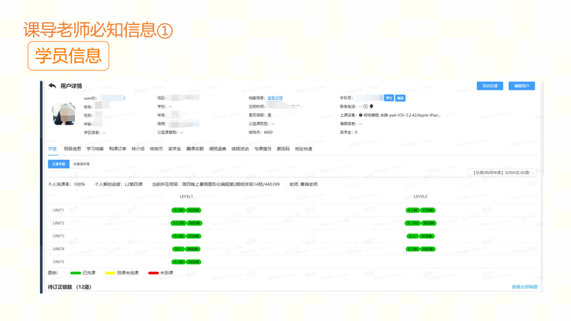
清楚了用户来源和家长诉求之后，我们落地到课导的实操动作：接手一名学员，首先要摸清哪些信息？第一大类就是学员信息。大家看用户详情页，这里面是我们必须掌握的内容：年级、学情、课程进度、已经学完的单元、硬件配置、学员标签等等。页面下方还可以查看孩子每一个单元的到课、完课记录，以及待订正错题。这些信息需要我们主动查阅、提前熟悉。我们只有吃透学员情况，教学和跟进才能精准，把课上好。
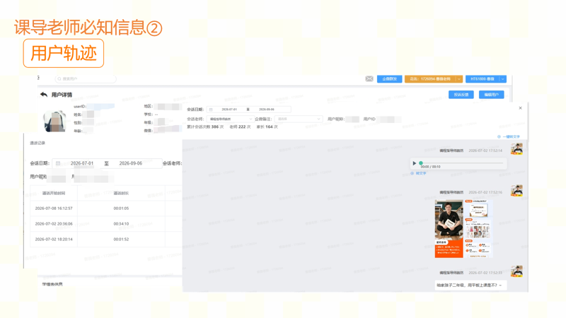
第二类必查信息，是用户轨迹。除了学员基础学情，我们还要重点查看学习轨迹、聊天会话、通话录音以及全部历史沟通记录。大家看截图，详情页里可以看到每一通电话的时间、时长，还有历任老师和家长的聊天记录。通过这些内容，我们能快速摸清这个学员之前的经历，清楚家长一直关注什么、还有哪些遗留问题没有闭环。交接最忌讳的就是：家长之前提过的顾虑、在意的问题，到我们这里断掉、需要家长重复再说一遍。所以接手学员之前，一定要认真查阅历史记录，这是我们承接信任、平稳交接最重要的一手资料。
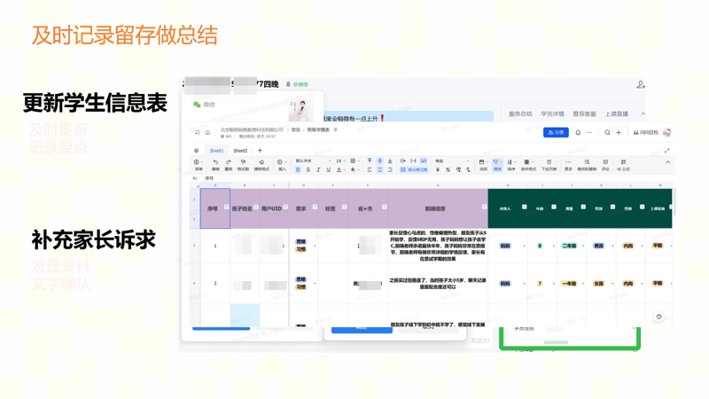
收集完学员信息、用户轨迹之后，还有一个关键动作：及时记录、留存总结。每次和家长沟通结束，要马上更新学生信息表，记下本次沟通要点，同步更新家长诉求；给家长发送重要资料，尽量用文字确认；同时定期复盘总结。大家看这张学生信息表，里面包含需求、标签、前端历史信息等栏目，我们接手之后，就在原有记录的基础上持续补充，不用从零搭建。这些工作看着细碎，但恰恰是稳定服务的根基。上一任老师就是靠着持续记录，慢慢建立起家长信任的。我们要把这个习惯承接下来，做得更细致。
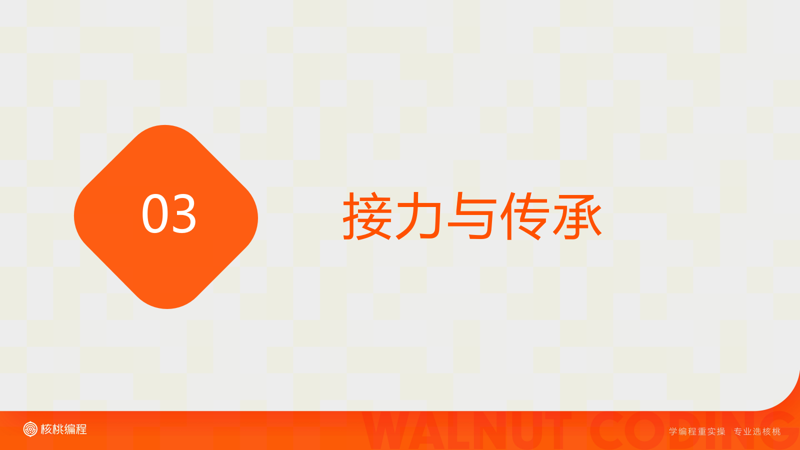
接下来进入第三部分，也是今天希望大家重点关注的内容：接力与传承。前面我们理清了用户的来源、整条链路各个岗位的分工。这一部分，我们聚焦交接环节：学员流转到我们手上之前，前序老师已经打下了哪些服务基础；接棒时我们有哪些注意事项，以及我们该如何在原有基础上，把服务做得更好。
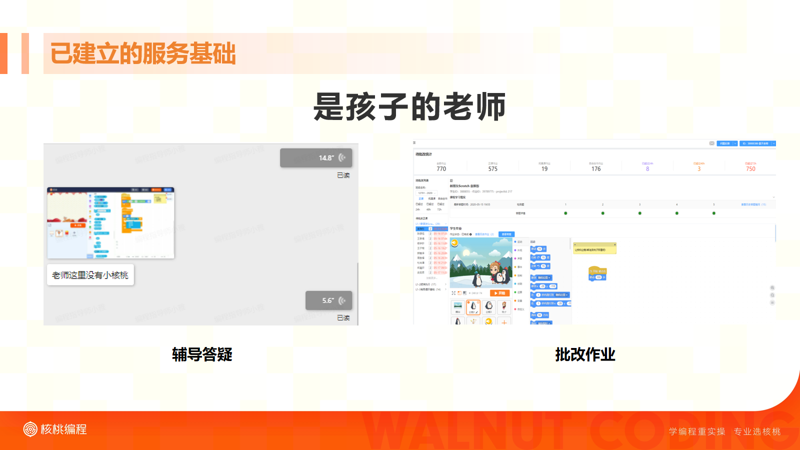
前一任老师给我们打下的服务基础，可以总结成三重服务属性。第一重，就是做孩子的老师。大家看截图，左边是日常答疑，孩子发语音、截图来提问；右边是作业批改。教代码只是其中一部分，更核心的是，当孩子被难题卡住的时候，陪着他拆解思路、多鼓励，引导孩子自己找到答案，而不是直接给结果。课后还要及时批改作业。在前一段的服务里，孩子已经习惯了这份持续的关注与正向反馈。我们接手之后，要继续当好孩子的老师，并且要求做得更深。毕竟算法阶段课程目标更高、学习周期更长，对孩子的思维要求也更高。
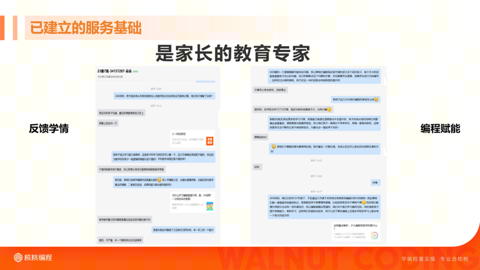
第二重身份，是家长的教育专家。大部分家长本身并不懂编程，之前的课导会用通俗的大白话，给家长讲明白编程能锻炼的能力，比如逻辑思维、专注力。同时结合作业批改、课堂观察，持续同步孩子真实的学习状态。长期这样沟通下来，已经在家长心里建立起 “核桃老师很专业” 的认知。我们接手之后，要延续这份专业，并且再往上升级。用更深度的学情分析、更及时的学习反馈，让家长感受到：进入算法阶段，老师的专业度更强，更值得托付。
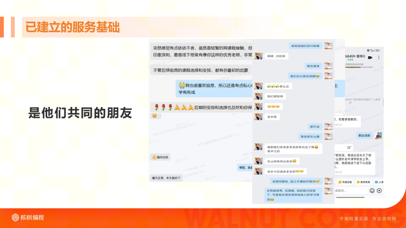
第三重身份，是孩子和家长共同的朋友。大家看这些聊天记录，有家长提到，虽然只是线上网课的相处，却印象很深，甚至会舍不得之前的老师。前任老师搭建起了双向的情感桥梁：孩子取得进步，第一时间同步给家长；家长有困惑，也耐心倾听解答。这份情感链接，就是信任的根基。现在这份链接交到了我们手里。我们不只是简单维持，还要继续加深。要让家长和孩子感受到，虽然升到算法阶段、更换了对接老师，但我们的关心和温度没有中断，反而更加贴心。
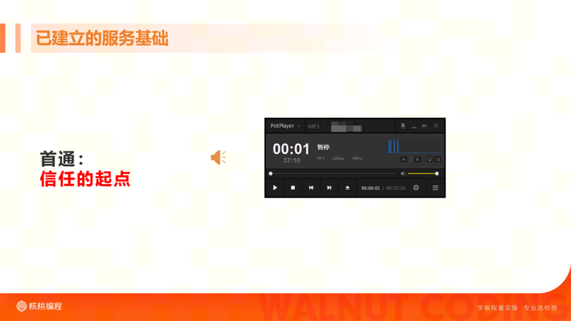
前面这三重身份，落到实操动作里，重中之重就是首通电话。首通，是我们承接信任的起点。之前的老师和家长慢慢建立起长期信任，很多也是从一通首通电话起步的。大家看 PPT 里的首通录音，时长三十七分钟。标准首通电话包含四个环节：自我介绍、了解孩子情况、深挖家长诉求、同步课程安排，每个环节都有章法。一通高质量的首通，能稳住家长长期学习的意愿。这里大家一定要记住：我们对接的家长，已经经过前一位老师的服务和铺垫，不是全新客户。所以我们这通首通，不是从零破冰，它的核心价值，是在已经存在的信任之上，进一步建立家长对我们的信心。首通的重心是承接、巩固信任，不要一上来就聊续费、费用。来看一道题，“首通”被定位为什么？
互动题
“首通”被定位为什么？
- A. 信任的起点
- B. 认真的付出
- C. 他们共同的朋友
- D. 家长的教育专家
选错后：仅弹正确提示继续
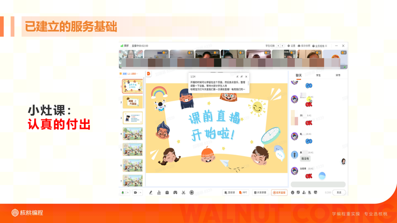
除了首通电话，前一位老师还有一项很重要的交付，就是小灶课。小灶课是正课之外，给学员额外安排的拓展辅导。除常规课程，还有课前直播、赛考直播、小灶直播，截图里展示的就是课前直播的场景。坚持落地这些直播，本身就是责任心的体现：基础薄弱的孩子可以查漏补缺，学有余力的孩子可以拓展拔高。也正是这份额外付出，让家长认可核桃老师的用心。现在学员流转到我们算法班，大家可以思考：我们还能给孩子提供哪些差异化价值？这就是我们接过接力棒、做得比上一棒更好的机会。
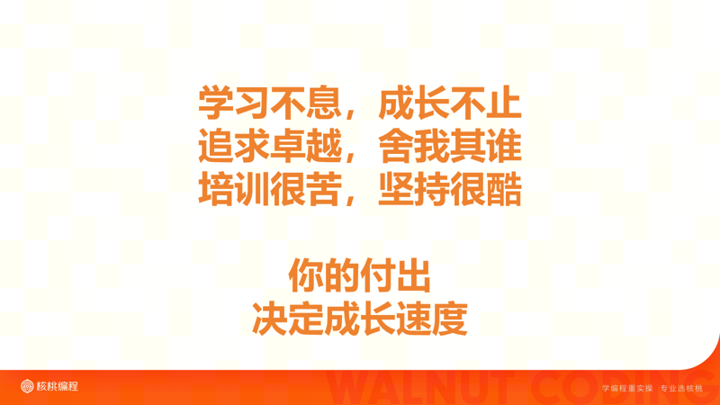
最后送给大家几句话共勉：学习不息，成长不止；追求卓越，舍我其谁；培训很苦，坚持很酷；你的付出，决定成长速度。在这里我想额外再强调一句：交到我们手上的每一位学员，都来之不易。投放团队投入成本引流，前端班主任完成体验转化，首单课导长期跟进、促成续报，一棒接一棒，才流转到我们算法板块。希望大家珍惜每一个用户，稳稳接好这一棒，争取做得比上一棒更出色。
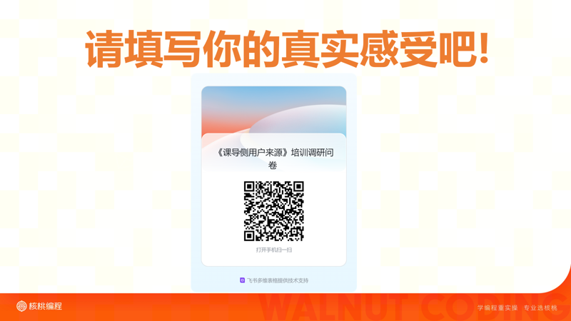
今天的课就到这里。请大家拿出手机，扫码填写一下《课导侧用户来源》培训调研问卷，写下你的真实感受。
题库（阶段小测 + 综合测试）
T-S01 · 阶段练习题·单选 · 用户来源解析·阶段1 · 答案 B
在主链路下方并列展示、贯穿各环节的两个部门是？
- A. 投放团队和班主任
- B. 赛事部门和质检部门
- C. 班主任和课导团队
- D. 首单S和算法
T-S02 · 阶段练习题·多选 · 用户来源解析·阶段1 · 答案 ABC
（多选）业务链路分析中，用箭头依次连接的主链路团队有？
- A. 投放团队
- B. 班主任
- C. 课导团队
- D. 质检部门
T-S03 · 阶段练习题·单选 · 用户来源解析·阶段1 · 答案 A
学员交接环节，承接方课导的核心职责是？
- A. 把前面团队积累的信任稳稳接住，交接不出现断层
- B. 把之前的服务记录清零，重新开始
- C. 回避提及前任老师，避免家长比较
- D. 优先向家长推销更高阶段的课程
T-S04 · 阶段练习题·单选 · 用户来源解析·阶段1 · 答案 B
学员流转链路中，体验课阶段由谁负责带班服务？
- A. 投放团队
- B. 前端班主任
- C. 首单阶段的前课导老师
- D. 算法课导
T-S05 · 阶段练习题·判断 · 用户来源解析·阶段1 · 答案 B
赛事部门和质检部门只负责业务链路中某一段的工作。
- A. 对
- B. 错
T-S06 · 阶段练习题·单选 · 用户来源解析·阶段2 · 答案 B
我们的用户主要是哪个年龄段的学生？
- A. 3~6 岁幼儿
- B. 5~15 岁小学、初中学生
- C. 15~18 岁高中生
- D. 不限年龄
T-S07 · 阶段练习题·判断 · 用户来源解析·阶段2 · 答案 A
（情景）家长在抖音看了核桃的直播介绍后购买课程进入班级，他属于哪个用户来源渠道？
- A. 前端直播
- B. 前端班主任（体验课）
- C. 家长自发宣传/口碑转介绍
- D. 线下活动引流
T-S08 · 阶段练习题·多选 · 用户来源解析·阶段2 · 答案 ABCD
用户来源主要有哪几大渠道？【多选】
- A. 口碑转介绍与前端直播
- B. 赛事奖项吸引
- C. 线下活动引流
- D. 前端班主任的体验课转化
T-S09 · 阶段练习题·判断 · 用户来源解析·阶段2 · 答案 A
流转到算法板块的家长，大多是孩子已学习一段时间、续报复购的老用户，而不是初次试课的新客户。
- A. 对
- B. 错
T-S10 · 阶段练习题·多选 · 用户来源解析·阶段2 · 答案 ABC
家长送孩子来学编程的五点诉求包括哪些？【多选】
- A. 兴趣试探与能力提升
- B. 咨询长期费用
- C. 体验核桃产品、硬件动手锻炼
- D. 保证校内考试满分
T-S11 · 阶段练习题·单选 · 用户来源解析·阶段3 · 答案 B
三角关系，以下对应正确的是？
- A. 家长是用户，孩子是客户
- B. 家长是客户，孩子是用户
- C. 家长和孩子都是客户
- D. 家长和孩子都是用户
T-S12 · 阶段练习题·多选 · 用户来源解析·阶段3 · 答案 ABC
（多选）前任老师已建立的服务基础（身份）有？
- A. 是孩子的老师
- B. 是家长的教育专家
- C. 是他们共同的朋友
- D. 是孩子的教育专家
T-S13 · 阶段练习题·多选 · 用户来源解析·阶段3 · 答案 ABCD
首通电话的标准环节包括哪些？【多选】
- A. 自我介绍
- B. 了解孩子情况
- C. 挖掘家长诉求
- D. 说明课程安排
T-S14 · 阶段练习题·单选 · 用户来源解析·阶段3 · 答案 A
小灶课指的是？
- A. 正常课程之外，给学员额外补充的拓展教学
- B. 只在周末开设的补课
- C. 家长陪同上课的亲子课
- D. 赛前的集中集训
T-S15 · 阶段练习题·判断 · 用户来源解析·阶段3 · 答案 A
（情景）家长对前任老师说“突然感觉有点依依不舍”，这体现了前任老师的哪种身份？
- A. 是他们共同的朋友
- B. 是孩子的老师
- C. 是家长的教育专家
- D. 首通：信任的起点
T-F01 · 本章综合测试题·单选 · 用户来源解析·全章 · 答案 A
家长说：「孩子喜欢就行，我就想让他玩得开心。」这类家长最原始的诉求是？
- A. 兴趣试探与能力提升
- B. 助力升学、科技特长生
- C. 咨询长期费用
- D. 硬件动手锻炼
T-F02 · 本章综合测试题·单选 · 用户来源解析·全章 · 答案 AB
（多选）以下渠道与PPT描述的对应，正确的有？
- A. 前端直播：家长通过抖音、小红书、快手等平台的直播介绍，购买课程进入班级
- B. 赛事奖项：学生通过赛事奖项了解课程，先上体验课再续报正式课
- C. 前端班主任：家长对课程认可后，主动向身边人推荐
- D. 线下活动引流：前端班主任负责的体验课学员，体验满意后转入正式课
T-F03 · 本章综合测试题·单选 · 用户来源解析·全章 · 答案 A
核桃学员的赛事奖项和科技特长生认证资格，在获客上的作用是？
- A. 吸引部分家长慕名而来，成为获客渠道之一
- B. 可以直接抵扣学费
- C. 能保证学员一定续报
- D. 对获客没有任何帮助
T-F04 · 本章综合测试题·多选 · 用户来源解析·全章 · 答案 AB
（多选）“课导老师必知信息”包括哪两项？
- A. 学员信息
- B. 用户轨迹
- C. 赛事成绩单
- D. 公司地址
T-F05 · 本章综合测试题·单选 · 用户来源解析·全章 · 答案 B
每次和家长沟通后，关于记录留存的正确做法是？
- A. 记住就行，不用写
- B. 更新学生信息表、补充家长诉求，重要资料用文字确认，定期总结
- C. 只记录投诉内容
- D. 等续报期再统一整理
T-F06 · 本章综合测试题·单选 · 用户来源解析·全章 · 答案 D
（情景）接手学员后，孩子作业卡住、家长又想了解学情。课导分别应延续哪项工作？
- A. 对孩子：反馈学情；对家长：辅导答疑
- B. 对孩子：编程赋能；对家长：批改作业
- C. 对孩子：批改作业；对家长：辅导答疑
- D. 对孩子：辅导答疑；对家长：反馈学情
T-F07 · 本章综合测试题·单选 · 用户来源解析·全章 · 答案 A
（情景）首通中家长说希望编程能帮孩子助力升学，课导应如何处理？
- A. 识别为“助力升学”诉求，并在学生信息表中补充家长诉求
- B. 识别为“咨询长期费用”诉求，并在学生信息表中补充家长诉求
- C. 识别为“助力升学”诉求，记在心里不做记录
- D. 识别为“硬件动手锻炼”诉求，并在学生信息表中补充家长诉求
T-F08 · 本章综合测试题·单选 · 用户来源解析·全章 · 答案 AB
（多选）“已建立的服务基础”中，以下对应正确的有？
- A. 首通：信任的起点
- B. 小灶课：认真的付出
- C. 是家长的教育专家：辅导答疑、批改作业
- D. 是孩子的老师：反馈学情、编程赋能
T-F09 · 本章综合测试题·多选 · 用户来源解析·全章 · 答案 ABC
关于「用户来之不易」，下列理解正确的有？【多选】
- A. 投放团队花真金白银获客
- B. 前端班主任完成体验课转化
- C. 前课导完成首单阶段带班与续报铺垫
- D. 课导可以随时更换手上的学员
T-F10 · 本章综合测试题·多选 · 用户来源解析·全章 · 答案 ABC
（多选，选3项）接手学员后，延续前任老师服务基础的做法，正确的是？
- A. 继续为孩子辅导答疑、批改作业
- B. 向家长反馈学情、做编程赋能
- C. 重视首通，把它作为信任的起点
- D. 把小灶课当作可有可无的补充